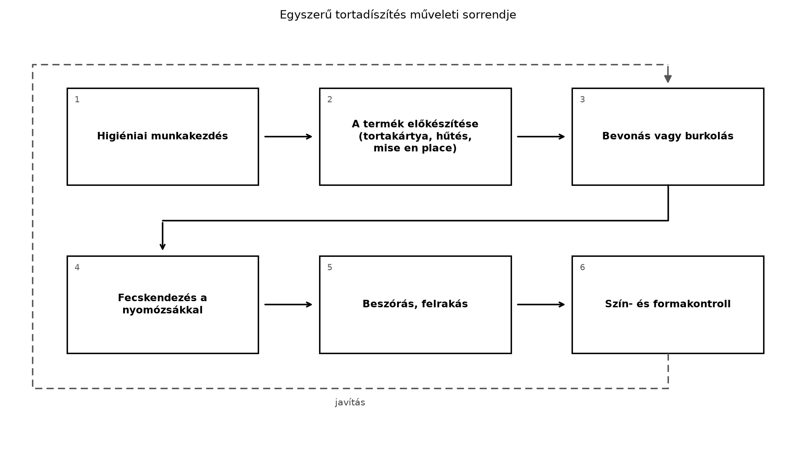

A cukrászüzemben a termék nemcsak ízletes, hanem szép is kell, hogy legyen. A vendég először a szemével „kóstol”. Egy egyenletesen bevont torta, egy szabályos csillagszegély vagy egy tisztán beszórt minyon bizalmat kelt, és magasabb árat igazol. A díszítés ugyanakkor munkafolyamat: ugyanúgy higiéniai, technológiai és gazdasági szabályai vannak, mint a tésztakészítésnek. Ha a díszítés rosszul tapad, lefolyik, vagy a nyomózsákból folyik a krém, a termék nem hozható forgalomba hibátlanul. Ebben az alfejezetben az egyszerű díszítési műveleteket tanuljuk meg úgy, hogy a későbbi különleges díszítések és dísztorták erre épülhessenek.
Képzelj el egy esküvői tortarendelést. A tortalap elkészült, a töltelék megfelelő. A cukrász most áll a kész torta előtt, kezében nyomózsák. Ha a csillagminta egyenetlen, a torta széle hullámos, a beszórás foltos, a vendég azonnal észreveszi. A cél tehát nem a látványos mutatvány, hanem a tiszta, ismételhető, arányos alapdíszítés.
A díszítés olyan, mint a termék öltöztetése. A bevonás vagy burkolás az alapréteg, mint egy ruha. A fecskendezés a szegély és a minta, mint a paszomány. A beszórás a finom fedőpor, mint a leheletnyi smink. A felrakás az ékszer: gyümölcs, dió, csokoládé. A formázás pedig a szabás-varrás, amellyel a díszítőanyagot a termékhez igazítjuk.
Egy egyszerű tortadíszítési folyamatot ábrázol az 1. ábra.

Az ábra leírása. A folyamat a higiéniai munkakezdéssel indul (kézmosás, munkaruha, eszközök). Ezután a terméket előkészítjük: tortakártyára tesszük, hűtjük, és összekészítjük a díszítő anyagokat (mise en place). A bevonás vagy burkolás képezi az alapot. Erre kerül a fecskendezés, majd a beszórás vagy felrakás. A szín- és formakontroll után, ha hibát találunk, visszalépünk a bevonás javításához. Így a díszítés minősége ellenőrzött, nem utólagos tűzoltás.
Definíció. Az egyszerű díszítés olyan késztermékművelet, amely a sütemény felületét, szélét vagy tetejét bevonó, beszóró, felrakó, fecskendező vagy formázó eljárásokkal teszi vonzóvá. Nem igényel különleges cukrászati diétás technikát, de pontos kézmozdulatot, anyagismeretet és higiéniát igen.
Szabály. A díszítés arányos a termék méretéhez és jellegéhez: nagy tortán nagyobb motívum, minyonon apró dísz, szeleten keskeny minta. A dísztömeg (a fecskendezett, beszórt, felrakott díszek, a termék szerkezeti részét képező teljes bevonás nélkül) a termék tömegének jellemzően 3–10%-a lehet; ezt a technológiai lap és az árképzés is figyelembe veszi (ellenőrizendő: üzemi norma).
Szabály. A díszítőanyag hőmérséklete illeszkedik a bevonandó termékhez. A hideg krém nem folyik, a túl meleg krém szétkenődik. A hőmérsékletet mindig digitális hőmérővel ellenőrizzük, mert a kéz érzete csal.
Jogszabály. A színezékek és az aromák csak az élelmiszer-adalékanyagokra vonatkozó uniós előírások szerint, engedélyezett anyagként és megengedett mennyiségben használhatók [1333/2008/EK rendelet – ellenőrizendő: hatályos mellékletek]. A fogyasztók tájékoztatását az 1169/2011/EU rendelet követeli meg, beleértve a 14 fő allergéncsoportot és az „ehető/nem ehető” dísz jelölését is, ha a dísz nem ehető.
A bevonás folyékony vagy képlékeny anyag felhordása a termék felületére. Célja a védőréteg, a nedvességzárás és az esztétikai alap.
Fő bevonóanyagok és munkahőmérsékletek (tájékoztató értékek, ellenőrizendő):
| Bevonóanyag | Munkahőmérséklet (°C) | Jellemző felhasználás |
|---|---|---|
| Öntött fondán | 30–35 | torta, minyon, szelet |
| Bevonómassza (nem temperálandó) | gyártói adatlap szerint, jellemzően 40–45 | torta, minyon |
| Áthúzó ganache | 30–35 | torta, szelet |
| Tükörbevonó | 25–30 | fagyasztott mousse-torta |
| Gyümölcszselé | 40–60 | gyümölcstorta, minyon |
A bevonás technikája: a terméket rácsra tesszük, a bevonóanyagot egyenletesen ráöntjük vagy spatulával felhordjuk. A felesleg lecsorog a rács alá; visszaöntésnél be kell tartani a hűtési láncot és a keresztszennyezés elkerülését. Vajkrémes alapozás esetén a tortát először vékonyan bekenjük, hűtjük, majd a végső bevonatot visszük fel. Ez a „morzsaalap” megköti a morzsákat és sima felületet ad.
Továbbvitt eredmény. A bevonás anyagait a Fondán melegítése, hígítása és felhasználása bevonásra, a Bevonómassza, zselék, áthúzó ganache és tükörbevonó alfejezet tanítja; itt a műveleti technikát kapcsoljuk hozzá. A pontos hőfokokat mindig a gyártói adatlap adja meg.
A burkolás képlékeny lap (marcipán, cukormassza, csokoládélap) terítését és rásimítását jelenti a termékre. A cukormassza (nyújtható fondán, tortamassza) nem azonos az öntött fondánnal: az előbbi gyúrható, nyújtható massza, az utóbbi melegített, folyékony bevonó. A burkolat sima, egyenletes, és a termék alakját követi.
Lépései: 1. A terméket vékonyan bekenjük sárgabarackdzsemmel vagy vajkrémmel, hogy a burkolat tapadjon. 2. A lapot porcukorral vagy keményítővel szórt felületen 2–3 mm vastagra nyújtjuk. 3. A lapot a sodrófára feltekerjük, majd a termékre terítjük, lelógó szélekkel. 4. Kézzel vagy simítóval rásimítjuk, a széleket levágjuk, a vágási felületet eldolgozzuk.
A marcipánburkolat alá a tortát mindig vékony zsiradékos vagy dzsemréteggel vonjuk be, különben a marcipán elválik. A burkolat alatti levegőbuborékot tűvel szúrjuk ki és simítsuk ki.
A beszórás por alakú vagy apró szemcsés anyag egyenletes eloszlatása a termék felületén. Eszköze: szita, szóró, sablon.
Gyakori beszóró anyagok: porcukor, kakaópor, fahéjas porcukor, reszelt csokoládé, darált dió, mandula, kókuszreszelék, dekorcukor, színes tortadara.
Technika. A beszórást mindig a hűtött, száraz felületre végezzük. Magasról, finoman szitálva egyenletesebb a réteg. Sablon esetén a sablont szorosan a felületre fektetjük, a beszórást gyorsan, merőlegesen végezzük, majd a sablont óvatosan, függőlegesen emeljük le, hogy a minta éles maradjon.
A felrakás darabos díszítő elemek elhelyezése a terméken. Lehet gyümölcs, tejszínhab, csokoládédísz, olajos mag, pirított dió, kandírozott narancshéj, ehető virág.
Szabály. A felrakott elemnek stabilan kell állnia. A friss gyümölcsöt előtte megmossuk, lecsepegtetjük; a vágott gyümölcsöt rövid időn belül felhasználjuk, mert a vágási felület mikrobiálisan érzékeny. A magas víztartalmú gyümölcs alá zselé- vagy krémalapot tegyünk, hogy ne áztassa el a tésztát. A gyümölcsdarabokat nem szabad visszatenni a közös tárolóba, csak a kimért adagot.
A fecskendezés a díszítőmassza nyomózsákból, cserélhető csőrön keresztül történő adagolása. Ez a cukrász egyik legfontosabb kézi művelete. Célja minták, szegélyek, betűk és formák készítése.
Eszközök: - Nyomózsák (textil, műanyag, eldobható) és a hozzá való csőr. - Csőrtípusok: sima (író, vékony vonal), csillag (csillag, kagyló, rózsa), francia csillag (sűrűbb fogazás), levél, rózsa (ferde vágású), szultán (soklyukú).
A csőr kiválasztása a massza állagához igazodik. Sűrű vajkrémhez nagyobb nyílású csillagcsőrt, lágy tejszínhabhoz kisebb, de határozott mintát adó csőrt használunk. A túl kicsi csőr a darabos masszát eldugítja, a túl nagy csőrnél a minta elveszti a tartását.
A fecskendezés alapelemei (továbbvitt eredmény): - Pont (sima csőr): a zsákot merőlegesen tartjuk a felülethez, nyomunk, majd a nyomást elengedve felfelé húzzuk. - Vonal (sima csőr): a csőrt ferdén, a felülethez közeli távolságban vezetjük, egyenletes nyomással. - Csillag (csillagcsőr): a csőrt merőlegesen tartjuk, nyomunk, majd leállítva felhúzzuk. - Kagyló (csillagcsőr): a csőrt ferdén tartjuk, nyomunk, miközben kissé előrehúzzuk, majd a nyomást csökkentve lezárjuk; a kagyló farka hegyes lesz. - Rózsa (rózsacsőr vagy csillagcsőr): először egy kúp alakú alapot fecskendezünk, majd körben, egymást kissé átfedő szirmokat formázunk. Az utolsó sor kissé nyitottabb, hogy a rózsa természetes hatást keltsen.
Fogás és nyomás. A zsákot a domináns kézben tartjuk, a nyomást a domináns kéz adja a zsák felső végén, a másik kéz csak vezeti a csőrt, és nem nyomja a masszát. A nyomást mindig a csőr hegyénél, a massza mozgásával összhangban szabályozzuk. A csukló laza, a minta a nyomásból és a kéz mozgatásából alakul ki, nem a massza erőltetett kifolyásából.
Hőmérsékleti hibák. A vajkrém 18–20 °C-on formázható jól; túl hidegen törik, túl melegen szétfolyik (ellenőrizendő: üzemi gyakorlat). A tejszínhabot 4–6 °C-on tartsuk, a fecskendezés előtt hűtött tálban, és azonnal dolgozzuk fel. A csokoládéganache 25–28 °C-on alkalmas fecskendezésre (ellenőrizendő).
A formázás a díszítőmassza alakra hozása: gombóc, henger, lap, szív, kúp. Eszközei: kiszúró, kanál, spatula, vizes kéz, formázó lap. A massza állaga határozza meg a formázást: a marcipán kézzel gyúrható, formázható; a grillázs melegen alakítható; a tejszínhab hűtve, adagolva formázható.
A formázás során is be kell tartani a higiéniát: csak tiszta kézzel, tiszta eszközzel dolgozunk; a kézzel formázott marcipánt és csokoládét azonnal lefedjük, és hűtve tároljuk.
| Termékcsoport | Jellemző egyszerű díszítés | Megjegyzés |
|---|---|---|
| Torta | bevonás, fecskendezett szegély, beszórás, gyümölcsfelrakás | a díszítés a szeletelés határait is kijelölheti |
| Szelet | csokoládé- vagy fondánbevonat, fecskendezett hullám, darált mag beszórás | a minta gyorsan, sorozatban készül |
| Minyon | teljes bevonás, apró csillag, gyümölcsdarab, kakaós minta | a díszítés a minyon ízét is azonosítja |
| Teasütemény | porcukor-beszórás, lekvárpetty, darált dió, cakkozott szél | a díszítés legyen egységes, nem tömeges |
A táblázat segíti a termékcsoporthoz illő díszítés kiválasztását. A tortán és szeleten a fecskendezett minta nagyobb, minyonon apró és sűrű. A teasüteményeknél a díszítésnek gyorsnak kell lennie, mert sok darab készül.
A színezés az egyszerű díszítés része lehet, de csak engedélyezett élelmiszer-színezékekkel. A színezékek lehetnek természetes eredetűek (pl. céklakivonat, kurkumin, klorofill) vagy mesterségesek (pl. azofestékek). Egyes azoszínezékek (pl. E 102, E 110, E 122, E 124, E 129, valamint az E 104 kinolinsárga) használata esetén a jelölésen kiegészítő figyelmeztetés kötelező: „…hátrányosan befolyásolhatja a gyermekek tevékenységét és figyelmét” (ellenőrizendő: 1333/2008/EK rendelet V. melléklet); gyermekeknek szánt termékhez ezek kerülése ajánlott. Mesterséges színezéket csak a jogszabályban engedélyezett anyagokból, a megengedett maximális mennyiségben szabad adagolni. A pontos adagolás a gyártói adatlap és a késztermék-csoport előírása szerint történik (ellenőrizendő: 1333/2008/EK rendelet hatályos mellékletei).
Jogszabály. A színezéket és az aromát a fogyasztói tájékoztatás szerint jelölni kell, kivéve a jogszabályban meghatározott egyszerűsített jelölést. A „természetes” jelző csak a jogszabályi feltételek teljesülése esetén használható. A színezett masszát ne nevezzük „mentesnek” vagy „diétásnak” a megfelelőségi nyilatkozat nélkül (ellenőrizendő: hatályos jelölési előírások).
A díszítés anyagszükségletét a termék felülete és az előírt rétegvastagság adja meg. A gyakorlatban egyszerű normákkal dolgozunk.
1. kidolgozott példa: torta bevonása vajkrémmel és porcukor-beszórással
Adott: egy 24 cm átmérőjű kerek torta, 12 szeletre osztva. A bevonó vajkrémet 3 mm vastagon visszük fel a torta tetejére és oldalára is, a porcukrot csak a tetejére szitáljuk, vékony rétegben. A vajkrém sűrűsége (ellenőrizendő: gyártói adat vagy mérés). A porcukor normája: egy 24 cm-es torta tetejére (tanulási példa, ellenőrizendő: üzemi norma).
Keresett: mennyi vajkrémre és porcukorra van szükség?
Képlet: a bevont felület . - , ahol - , ahol a torta magassága (6 cm).
Kiszámítjuk: - - (itt a számítás egyszerű: a két felület majdnem egyenlő, de írjuk ki) - Összes felület
A krémréteg térfogata: , ahol (3 mm). .
A krém tömege: , kerekítve 260 g.
A porcukor: .
Ellenőrzés: a 260 g vajkrém egy 24 cm-es torta bevonásához reális, mert a bevonóréteg vékony, és a morzsaalaphoz is szükséges anyagot tartalmazza. A porcukor 10 g egyenletesen szitálva jól látható, de nem túl vastag.
2. kidolgozott példa: 40 minyon díszítése csokoládébevonattal és apró csillagokkal
Adott: 40 db minyon, egyenként 4 × 4 × 3 cm-es kocka alakú, 30 g tömegű. Minden minyont az oldalán és a tetején étcsokoládé-bevonattal vonunk be (alul nincs bevonat), és a tetejére egy-egy vajkrémes csillagot fecskendezünk (3 g/db). A bevonat vastagsága 1,5 mm, sűrűsége (tanulási példa, ellenőrizendő: üzemi norma és gyártói adat).
Keresett: mennyi étcsokoládéra és vajkrémre van szükség a 40 darabhoz, és mekkora a dísztömeg aránya?
Számítás (az 1. példa módszere: felület × rétegvastagság × sűrűség): - Bevont felület egy minyonon: . - Bevonat térfogata: . - Bevonat tömege darabonként: . - Csokoládé 40 darabhoz: . - Vajkrém: . - Nyers minyontömeg: ; a kész tétel tömege: .
Összevetés a szabállyal: a vajkrémes csillag (a tulajdonképpeni díszítés) a kész tétel tömegének -a, vagyis a 3–10%-os tartományba esik. A csokoládébevonat a termék szerkezeti része, nem „díszítés”: a kész tétel tömegének -a, és a szabály a teljes bevonásra nem vonatkozik, a bevonat normáját a technológiai lap adja meg (ellenőrizendő: üzemi norma). Ellenőrzés: egy 3 cm átmérőjű félgömb alakú minyon felülete csak , a bevonata kb. 3 g, tehát a bevonat tömege erősen függ a minyon alakjától és méretétől.
Következtetés. A díszítő anyag mennyiségét mindig a technológiai lap adja meg. A fenti becslés a gyakorlati számolás logikáját mutatja: felület, rétegvastagság, fajlagos norma.
Cél. A tanuló készítsen egy 24 cm-es gyakorlótortát vajkrémmel bevonva, csillagszegéllyel és porcukor-beszórással. Gyakorolja a csillag- és kagylómintát nyomózsákkal, és tanulja meg a díszítés higiéniai és minőségi ellenőrzését.
Eszközök és anyagok. Kész, hűtött piskótakorong (24 cm, 2 réteg), tortakártya, forgótányér, paletta/spatula, nyomózsák, csillagcsőr (8–10 mm), sima csőr, digitális hőmérő, szita, porcukor, vajkrém (kb. 300 g, 18–20 °C), sárgabarackdzsem (áttört, forralt, kb. 50 g), papírtörlő, fólia, ételcímke.
Higiéniai munkakezdés. Tiszta munkaruha, hajháló, kötény. Ékszer, karóra, körömlakk nélkül. Kézmosás szappannal, meleg vízzel, majd fertőtlenítő kézmosás. Munkafelület és eszközök tiszták, szárítottak, élelmiszerrel érintkezésre alkalmasak. A vajkrémet és a dzsemet hűtve, lefedve készítjük elő; a piskóta friss, idegen szagtól mentes.
Biztonsági korlát. A gyakorlat kést és nyomózsákot használ. A nyomózsákot ne töltsük túl, hogy a massza ne folyjon a kézre. A kést éles, a vágást magunktól elfelé végezzük. A gyakorlat otthon, kis adagban is elvégezhető, de üzemi környezetben oktatás és felügyelet mellett.
1. Termék neve, csoport, alapmennyiség. Gyakorló díszített torta; kikészített tortaalap, 1 db 24 cm-es, 12 szelet.
2. Anyaghányad (a díszítéshez, a piskóta külön receptúra szerint)
| Nyersanyag | Mennyiség (g) | Megjegyzés |
|---|---|---|
| Kész piskótakorong | 1 db 24 cm | hűtött, kétrétegű |
| Sárgabarackdzsem | 50 | áttört, forralt |
| Vajkrém | 300 | 18–20 °C |
| Porcukor | 10 | átszitálva |
| Étcsokoládé reszelék | 5 | díszítéshez (opcionális) |
| Összesen | 365 | a piskóta nélkül |
3. Eszközök. Tortakártya, forgótányér, paletta, nyomózsák csillagcsőrrel, szita, digitális hőmérő, tiszta kendő.
4. Műveleti sorrend (hőmérsékletek tájékoztatók, ellenőrizendő): 1. A piskótát tortakártyára helyezzük, a tetejét egyenletesen bekenjük a dzsemmel. 2. A vajkrémet 18–20 °C-ra temperáljuk; spatulával vékony morzsaalapot viszünk fel a tortára, 10–15 percig hűtjük. 3. A maradék vajkrémmel a torta tetejét és oldalát egyenletesen bevonjuk, simára húzzuk. 4. A nyomózsákot megtöltjük a maradék vajkrémmel, csillagcsőrrel a torta szélén 12 egyenlő osztásban csillagot vagy kagylót fecskendezünk. 5. A torta tetejét porcukorral egyenletesen beszórjuk. 6. Ellenőrizzük a mintát, a felületet és a hőmérsékletet; a kész tortát hűtve tároljuk.
5. Kritikus pontok és technológiai kulcspontok. A vajkrém hőmérséklete nem haladhatja meg a 20 °C-ot munka közben; ha felmelegszik, visszahűtjük. A dzsem és a krém réteg vastagsága egyenletes. A nyomózsákot használat közben lefedve tartjuk, a massza nem érintkezhet nyers anyaggal.
6. Allergének. A termék a vajkrémtől függően tartalmazhat tejet és tojást; a piskóta glutént, tojást. A sárgabarackdzsem és a porcukor nem tartalmaz jelölendő allergént, de a gyártási környezetben keresztszennyeződés előfordulhat. Az allergénsor: glutén, tojás, tej (ellenőrizendő: a tényleges recept szerint).
7. Minőségi jellemzők. A bevonat sima, egyenletes, nem folyik le. A csillagok szabályosak, egyenlő távolságban. A porcukorréteg vékony, nem foltos. A torta formája kerek, a szeletek nem deformálódnak.
8. Tárolás, eltarthatóság. Hűtve, lefedve, tejtermékes díszítéssel 1–2 nap (ellenőrizendő: HACCP-terv szerint). A tálalás előtt 15–20 perccel kivesszük a hűtőből, hogy az ízek kibontakozzanak, de a tejszínes/tejes díszt nem hagyjuk 30 percnél tovább szobahőmérsékleten (ellenőrizendő).
Ellenőrzési pontok. A vajkrém ne legyen fényes (túl meleg) vagy törő (túl hideg). A csillagok egyenlő magasságúak. A beszórás egyenletes. A torta alja tiszta.
Dokumentálás. A gyakorló lapra feljegyezzük a felhasznált anyagok tömegét, a hőmérsékletet, az esetleges hibát és javítást. Üzemi környezetben a HACCP-naplóba a hűtési és hőntartási időket is rögzíteni kell.
A díszített terméket érzékszervileg vizsgáljuk. Forma: a termék megtartja alakját, a díszítés nem torzítja. Felület: a bevonat sima, fényes vagy a máz jellegének megfelelően tükröződő; a beszórás egyenletes. Belső szerkezet: a díszítés nem áztatta el a tésztát. Íz, illat: a díszítőanyag illeszkedik az alap ízéhez, nem dominál feleslegesen. Állag: a fecskendezett elem stabil, nem folyik, nem keményedik túl.
A tömegellenőrzés: a késztermék nettó tömegét mérjük, és összehasonlítjuk a technológiai lappal. A díszítő tömeg külön mérésével az anyagfelhasználást is ellenőrizzük.
| Hiba (tünet) | Ok | Megelőzés/javítás |
|---|---|---|
| A bevonat lefolyik, fényes, vékony | túl meleg a máz; túl sok folyadék a krémben | hűtsük a masszát, sűrítsük, dolgozzunk az előírt hőfokon |
| A burkolat ráncos, levegős | túl vastag lap; rossz tapadás; a termék nem sima | nyújtsuk egyenletesen, kenjük alá a dzsemet, szúrjuk ki a buborékot |
| A csillag szétterül | túl meleg a krém; túl lágy a hab | hűtsük 18–20 °C-ra (vajkrém) vagy 4–6 °C-ra (tejszínhab) |
| A nyomózsákból nem jön a massza, vagy dugul | csomós a krém; a csőr túl kicsi; a massza túl hideg | szűrjük át a masszát, válasszunk nagyobb csőrt, melegítsük óvatosan |
| A beszórás foltos, a sablon elmosódott | nedves felület; a sablon elmozdult | csak száraz, hűtött felületre szórjunk; a sablont rögzítsük, függőlegesen emeljük le |
Egy cukrászdában 40 db minyont rendeltek esküvői desszertasztalra. A tanuló a csokoládébevonatot 32 °C-on használta, de a máz egy része a hűtőből kivett minyonra került, ezért a bevonat azonnal megdermedt, mielőtt a felesleget le lehetett volna csorgatni. A minyonok alja vastag, rücskös lett. A hiba oka: a termék hőmérséklete alacsonyabb volt az előírtnál, és a bevonat munkahőmérséklete sem volt egyenletes. A helyesbítés: a bevonatot újra temperálták, a minyonokat 18–20 °C-ra hagyták melegedni, és a bevonást gyorsan, kis adagonként végezték. A selejtes darabokat külön gyűjtötték, és trüffeltöltelékbe dolgozták fel, miután a minőségért felelős jóváhagyta. A tanulság: a díszítés hőmérséklet-illesztése ugyanolyan kritikus, mint a tésztakészítés.
1. feladat (A) Sorolj fel három egyszerű díszítési műveletet, és mindegyikhez nevezz meg egy jellemző eszközt vagy anyagot.
2. feladat (A) Melyik csőrt használnád írásra (vékony vonal, betű) és melyiket csillagszegélyhez?
3. feladat (B) Egy cukrászda 60 db minyont díszít. Minden minyon tetejére 2 g vajkrémes csillagot fecskendeznek, és 5 g étcsokoládé reszelékkel szórják meg. Mennyi vajkrémre és csokoládéreszelékre van szükség? Számold ki grammban, és ellenőrizd a tömegarányt, ha a minyon alaptömege 30 g/db.
4. feladat (B) Egy 18 cm átmérőjű tortát szeretnél nyújtott cukormasszával (tortamasszával) burkolni. A lap 3 mm vastag, a torta magassága 6 cm, a massza sűrűsége 1,3 g/cm³. Becsüld meg a szükséges nettó mennyiséget grammban. A nyújtási veszteség a bruttó tömeg 35%-a; számítsd ki a bruttó szükségletet a bruttó = nettó / (1 − v) képlettel.
5. feladat (C) Hiba elemzése: A nyomózsákból a tejszínhab a tortán szétterül, nem tartja a csillag formát. Milyen hőmérsékleti vagy állagbeli hibára gondolsz? Hogyan javítanád, és hogyan előznéd meg?
6. feladat (D – gyakorlati) Készíts el egy 24 cm-es gyakorlótortát a fejezet technológiai lapja szerint: vajkrémmel bevonva, tizenkét csillaggal a szélén, porcukorral beszórva. Töltsd ki a technológiai lapot a felhasznált anyagok mennyiségével, a mért hőmérséklettel és a megfigyelt minőségi jellemzőkkel. Értékeld magad az alábbi szempontok szerint: a bevonat simasága, a csillagok egyenletessége, a beszórás egyenletessége, a munka higiéniája, a technológiai lap kitöltöttsége.
1. feladat megoldása. Pl. bevonás (spatula, paletta), beszórás (szita, porcukor), fecskendezés (nyomózsák, csillagcsőr), formázás (kiszúró, kéz), burkolás (sodrófa, simító), felrakás (csipesz, gyümölcs).
2. feladat megoldása. Íráshoz sima, kisméretű írócsőr; csillagszegélyhez közepes vagy nagyobb csillagcsőr (8–12 mm-es nyílás). A csőr kiválasztásánál a massza állaga is számít.
3. feladat megoldása. Adott: db, csillag , reszelék . Keresett: , . - . - . - Alaptömeg: . - Dísztömeg: . - Dísztömeg arány: . Ez magas, de ha a reszelék a bevonat része, figyeljük a teljes nettó tömeget. A gyakorlatban a minyon csokoládéburka ennél vékonyabb, a reszelék inkább 2–3 g/db (ellenőrizendő: üzemi norma).
4. feladat megoldása. Adott: , , magasság , vastagság , sűrűség , veszteség . - Felület: ; ; összesen . - Térfogat: . - Nettó tömeg: . - Bruttó szükséglet veszteséggel: . - Ellenőrzés: a 355 g cukormassza egy 18 cm-es tortára reális, mert a nyújtásnál valóban jelentős a hulladék.
5. feladat megoldása. Tünet: a tejszínhab szétterül, nem tartja a csillagot. Hipotézis: (a) a tejszínhab túl meleg (5 °C fölött a zsír megolvad, a hab összeesik), (b) a tejszín nem volt kellő zsírtartalmú (min. 30–35%), (c) a hab nincs eléggé felverve. Ellenőrzés: hőmérővel mérjük a habot, és megnézzük a csúcsot (a hab tartson kemény csúcsot). Ok: a hőmérséklet vagy a zsírtartalom/állag. Javítás: hűtsük a habot 4–6 °C-ra, verjük tovább, vagy keverjünk hozzá hideg, jól felvert tejszínt. Megelőzés: a tejszínt és az eszközöket előre lehűtjük, a habot hűtve tároljuk, és csak közvetlenül a fecskendezés előtt vesszük elő.
6. feladat megoldása – értékelési szempontok. A gyakorlati feladatnál a tanuló a technológiai lap alapján dolgozik. Értékelés: a bevonat simaságát szemrevételezzük (nincs hullám, morzsa), a csillagokat egyenlő távolságra és magasságra készíti, a porcukor vékony és egyenletes, a munka során a higiéniai rendet betartotta, a technológiai lap minden rovatát kitöltötte, a hőmérsékletet feljegyezte. A várt eredmény egy hibátlan, tiszta, szabályos díszítésű torta, amely a továbbvitt fecskendezési alapelemeket gyakoroltatja.
Az egyszerű díszítés a cukrászati késztermékek értéknövelő, de higiéniai és technológiai fegyelmet igénylő művelete. A bevonás folyékony vagy képlékeny réteg felvitele, a burkolás képlékeny lap rásimítása, a beszórás por egyenletes eloszlatása, a felrakás darabos elemek elhelyezése, a fecskendezés nyomózsákos mintaadagolás, a formázás a díszítőmassza alakra hozása. Mindegyik műveletnél a massza hőmérséklete és állaga a kulcs: vajkrémet 18–20 °C-on, tejszínhabot 4–6 °C-on, az öntött fondánt 30–35 °C-on dolgozzuk fel (ellenőrizendő értékek). A fecskendezés alapelemei a pont, vonal, csillag, kagyló, rózsa; csőrök: sima, csillag, rózsa, levél. A színezéshez csak engedélyezett adalékanyagokat használunk. Az allergéneket és a nem ehető díszeket jelölni kell. Továbbvitt eredmény. A fecskendezési alapelemeket és a díszítés esztétikai szabályait a Különleges díszítés: csokoládé-, marcipán-, karamell-, zselatinmassza- és grillázsdíszek, a Szegélydíszek és feliratok és az Alkalmi dísztorták tervezése és készítése alfejezetek építik tovább.